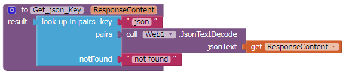

App Inventor2（以降AI2）の利用方法について
AI2は簡単にアプリケーションが作成できると言っても、AI2上でテキストや画像を自在に処理できるテクニックは私にはありません。どういった使い方ができそうか考えました。
AndroidデバイスのAI上でテキスト／画像／バーコードなどのデータを取得し、それをPCに送信し処理してもらうような使い方ならできそうです。そして場合によっては、PCから結果を返信してもらいます。
まどろっこしいですが、この方法はAndroidデバイスのIoT利用にもつながるものだと思います。
AI2には、HTTP通信のPOSTメソッドでデータを送受信する機能があります。
今回は、単純なテキスト（JSON形式）をエコーサーバーに送信して、エコーサーバーから返信されたテキストを表示するプログラムを作成したいとおもいます。
エコーサーバーは、httpbin.org を利用します。トップページには、A simple HTTP Request & Response Service.（単純なHTTP要求および応答サービス）とあります。今回はPOSTを利用します。
画像1
HTTP通信におけるGET／POST／PUTなどは、ここでは説明しません。「http get post」あたりでGoogle検索してみてください。実は私もHTTP通信については素人なのです。まずはGETとPOSTあたりから勉強するのが良さそうな感じです。
前回と同様に、作成したプロジェクトはこちらに置いておきます。本ページではポイントを説明します。
デザイナーでの作業
送るのは、文字列と数値の2つを送ります。（とは言っても文字列に変換して送っていますが）送信内容は以下のようになります。（JSON形式）
{"StringValue":"abc","NumericValue":"123"}デザイナーで以下のように、コンポーネントを配置していきます。

画像2
デザイナーでのポイントはありません。強いて言えば、デバッグのために「エコーサーバーからの返信の全内容（JSON形式）」／「抽出されたデータセット（AI2の形式）」／「各抽出された値」を表示しています。
ブロック エディターでの作業
ブロック エディターで以下のように、コンポーネントを配置していきます。
画像3
ユーザー定義関数（戻り値無し） を使って初期化の振舞いを設定します（画像3のInit_Var）。アプリケーションの起動時と「Initialize」ボタンが押された時に実行されるようにします。

画像5
ユーザー定義関数（戻り値有り） を使って送信用JSON形式の文字列生成関数を作ります（画像5のGenerate_JSON）。

画像7
エコーサーバーから返ってきたレスポンス（RespnseContent）から「json」というキーの内容を抽出します（画像7のGet_json_Key）。抽出されたものはAI2の形式になっています。
画像8
送信ボタンが押された時の振舞いを設定します。
「URLを設定 → リクエストヘッダーの設定 → POSTによる送信」（画像8）を行います。
画像9
レスポンスがあった時の振舞いを設定します。
正常時は「responseCode」は200になりますので、正常時と異常時の振舞いを設定します。異常時はポップアップが表示されます。
正常時はデータを抽出します。全レスポンスからの抽出は、先ほど作った「Get_json_Key」関数を使います。App Inventor2の形式のデータセットからの抽出は、 を使います。
後はビルドすればOKです。
実行画面の例
画像11